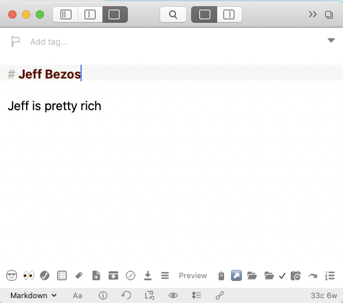
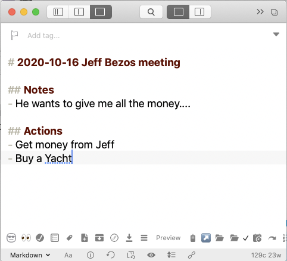
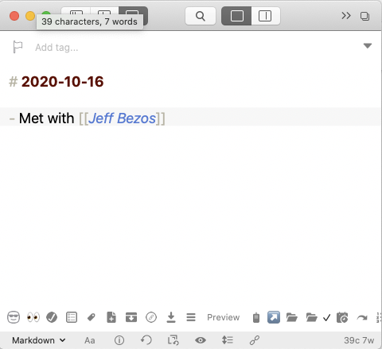
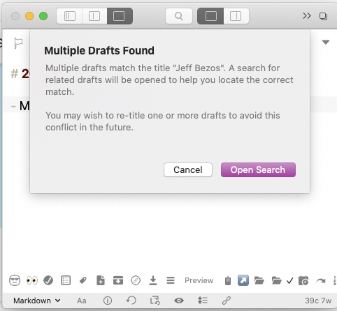

So my feature request is an option to have strict cross lining like many other personal knowledge apps like Obsidan/Roam/etc. so right now I run into the following issue:
I create a note that represents a person like so:

I then have a meeting with person and create a note:

I then want to link to the person in a different note:

Clicking on the name brings up this:

So to make this work like it does in other apps I would have to go and remove the name from any note title or start adding zettelkasten style ids to every title.
So the feature request would be to an option that’s say “cross linking strict mode” where links with [[]] only link to notes that exactly match (maybe we ignore the # commonly found in titles), so [[Jeff Bezos]] only links to a note that has # Jeff Bezos as the title and creates one if it doesn’t exist even if there’s a note with a title like “# 2020-10-16 Jeff Bezos meeting”.
With Roam the first instance of [[Jeff Bezos]] would create a new “page” (“draft” in Drafts) titled Jeff Bezos.
Thereafter, any use of [[Jeff Bezos]] such as:
Met with [[Jeff Bezos]] to discuss my plans to buy a yacht.
would exist on the page where it was entered, but also be added to the Jeff Bezos page.
[[Jeff Bezos]] does double duty in Roam – it links you to a page if you click on it, and it also adds any entry with [[Jeff Bezos]] embedded in the entry to the Jeff Bezos page, regardless of where the entry was made. There could be a dozen [[Jeff Bezos]] entries – none made on pages with “Jeff Bezos” in the title.
But, Drafts doesn’t perform the “collection” function. Therefore, if you clicked on [[Jeff Bezos]] using your plan, you would see only a fraction of the information related to Jeff.
In Drafts, the assumption is that you would link to drafts using more descriptive titles:
[[Jeff Bezos meeting re my yacht]]
[[Jeff Bezos is a rich guy.]]
[[Jeff Bezos keeps asking to borrow my lawnmower.]]
Each is a separate subject, residing on separate drafts, accessed through different links. If you search for [[Jeff Bezos]] Drafts shows you all the Jeff Bezos titles – and you can pick what you want.
Otherwise, I don’t know how you would be able to find all the information related to our pal Jeff.
Greg’s aware of the rough edges, which leads me to believe that there’ll be further adjustments with this in mind. The recent release of Drafts 23 with support for limiting search queries to titles is a step in a good direction, and it certainly does make quick search more useful in this kind of situation.
Neat summary of the way cross-linking in Drafts differs from Roam! It’d be useful to pin that somewhere as a reference for anyone else who might benefit from the understanding.
To be fair, the request was for an optional “strict” mode. No idea how feasible the optionality would be, but if it were possible, it could allow for a broader set of use cases…
This reminded me of this: RFC: Cross-Link Definition Formats, which seems to suggest that at some point in the future, we might be able to define some of these things for ourselves?
The prefix suggestion should work well. I currently do something similar, and it allows for the best of both strict and loose linking. In this instance, the main Bezos note could even be titled “# @ Jeff Bezos” where the @ (or any other appropriate symbol) could be used consistently to connote a reference note like this…
I’m not sure I understand how the prefix system would work to identify all information that might be embedded in a draft. For example, consider the following ROAM “block” - a paragraph in ROAM is called a block:
Arranged meeting with [[Jeff Bezos]] to discuss [[my new yacht]] on [[October 30th, 2020]]
This block would appear in four different ROAM “pages” (where a page is roughly analogous to a draft in Drafts):
[[Jeff Bezos]]
[[my new yacht]]
[[October 30th, 2020]]
the page used for the entry - typically "today’s page
Seeing it in any of the four different contexts provided by these four pages might be desirable at any given time.
Mapping this functionality into Drafts is a problem too hard for me to solve. Drafts does stuff that ROAM does not - but I don’t think it does this particular thing - except maybe with a disciplined use of tags.
Thanks for the replies, so these tips around prefixing would work for meeting notes and info surrounding work colleagues and such but I’ll run into the same issues when you create permanent/evergreen/study notes, which is where the power of cross linking comes into it’s own.
So maybe a different example will highlight the issue I’m coming across if I want to make drafts the tool I use for PKM, which I don’t run into in Obisidan. if I had this note:
# Deterministic System
In [[Computer Science]] a deterministic system is a system that where no randomness is involved in the development of future states. So the same output will always be achieved from a given start condition or initial state.
Then if I have a reference to an article say called
# How a Deterministic System is the way forward
[[Deterministic System]] is the way forward as we move to a state driven etc. etc.
Now if I link to [[Deterministic System]] from a different note I would run into the same issue.
So if we were able to set in the options that we don’t want a helping hand as all the drafts app is doing is finding notes that have “Deterministic System” in the title and in this case I would want drafts to find the title that is exactly “Deterministic System”.
It works in Obsidian as the name in the bracket has to be a file name. So in this case it would be Deterministic System.md and so it’s almost garunteed that each note is unique, unlike drafts. I guess If I wanted to use drafts instead I could alter my workflow and just link to the references of the note at the bottom instead of inline. Or start adding zettelkasten style IDs to the title to make it unique.
So from my experience there’s not too much difference between the basic way they both do this.
In the end in Roam and Obsidian there’s two different notes/pages and all the app is doing is tracking the back links between the two and showing them at the bottom of the page. You could do the same thing in Drafts by searching all you notes for [[Jeff Bezos]] to get the backlinks, and even create an action that does that for you.
But you’r right in drafts expects you to do cross linking in a different way to these other apps, I just wondered if it might be possible to support mulitple ways.
Ahh nice I like the idea of [[x:for an exact match]] as a solution that would not remove the usefulness of the current fuzzy match. I remember somewhere talk of being able to add our own that will call an action? Then I could get JS to do the magic and get the desired effect.
There are quite some users that are planing and working with drafts as a text and study database.
I may be wrong with that but the second problem does not seem different.
You might even use the [[x:Computer Science]] variant right away if you use the same prefix in your Computer Sience draft. The same way as prefix.
Though I would choose something like [[>>Computer Science]] or even [[📒 Computer Science]]
Last but not least replace the Spaces with a dash or underscore.
The goal is to tweak your draft title not to match the other reference and to fool the fuzzy search.
The chosen prefix like [[>> can be placed on a keyboard for quick access and connected to a shortcut.
There are some nice actions for crosslinking and a feature that you can create a new drafts note from wiki-style link if it is not available.
New in Drafts 23: the quick search that’s invoked from a wiki-link query defaults to searching for title only (title:"My Draft") to help focus these searches in a better way.
I hope this isn’t derailing the original feature request, but to offer yet another alternative: it would actually be really useful if, instead of the “multiple drafts match” warning, the quick search window was invoked immediately, and the closest exact/strict match was given preference and sorted to the top of the list of returned matches.
This would truly be the best of both worlds. No syntax or symbols to remember, no additional behaviour to learn, yet we’d still have all the benefits and discoverability of the current fuzzy searching.
I know it’s designed to be helpful, but when I see the current “multiple drafts match” message, I can’t help feeling like I’ve done something wrong in failing to ensure the uniqueness of my titling/links. And it’s a bit of a speed-bump. I’d prefer the quick search response to multiple drafts that match a wiki-link to feel more like a useful feature than a warning.
@jsamlarose - I think you have forwarded two really good ideas that would go far towards removing the rough edges of this evolving (and very powerful) capability:
1. Create an exact match link option, e.g., [[x: “exact title”]]
2. Remove the warning message in the event that multiple matches are found following a fuzzy search.
As you point out, a fuzzy search should be viewed as a feature, not as a problem. Being able to find any title with a particular word or phrase in it has real benefits, especially if you use long titles to make them as descriptive as possible.
I’d like to suggest two refinements to your ideas:
The exact search method should strip Markdown headers. It would therefore be “almost exact.”
When an “exact match” link is constructed, it is important that spelling, case, plural variations, etc. not get in the way of creating “exactness.” Therefore, I recommend that after the first one or two letters are entered after “[[x:” that a list of matching titles be displayed and progressively narrowed as each letter is added to the link. Choosing from a list of potential matches is the best way to ensure that “exactness” is achieved.
Linking by title is always going to be less reliable than using unique identifiers and require a certain amount of discipline. If you want 100% reliable links, use [[u:UUID]] format links. Not human readable, yes, but totally reliable and resilient in cases of title changes, etc.
Be aware that while this is a feature of Drafts, Drafts is never going to be purpose-built around optimizing for this cross-linking - it is a multi-purpose tool.
Link identifiers and the links they create are dynamically defined in syntax highlighting definitions, and I’m working hard on getting custom syntax support out - it’s the next “big” feature on the road map now that support new OS features for the Fall is getting wrapped up…so that will open up a lot of customization options for additional/different ways to do markup for links (see format preview docs).
Some of the other things you are talking about - like behaviors when multiple matches are found - would require some other minor tweaks to parameters supported in Drafts /open URL scheme, I’m sure I can make some of those modification (like being able to suppress the multiple draft warning).
{kind=link}